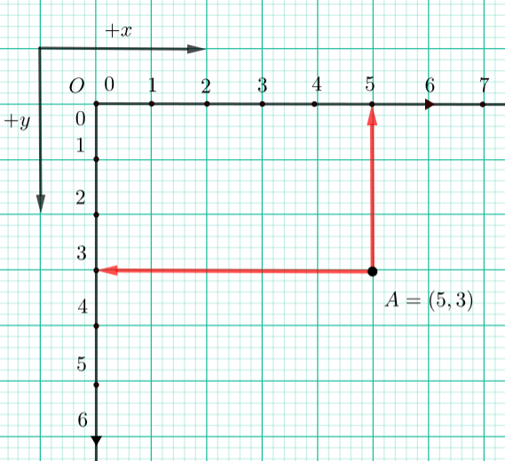
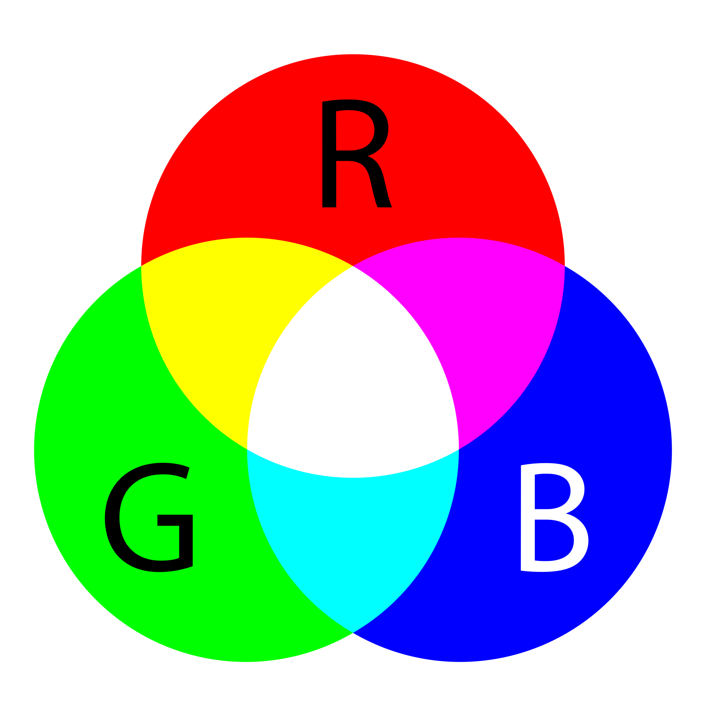

Писане на програма PyGame¶
Основна структура на програма PyGame¶
За да могат програмите, които пишем, да използват библиотеката (модула) PyGame, първото нещо, което трябва да направим, е да импортираме модула PyGame в началото на програмата. Това ни позволява да използваме всички функции и константи, дефинирани в модула PyGame.
След импортирането на модула, но преди да извика други функции, всяка програма, която използва библиотеката PyGame, трябва да направи няколко стъпки, за да инициализира библиотеката, да посочи размерите на прозореца, в който програмата ще рисува, и да зададе заглавието на този прозорец. Също така, има няколко стъпки в края на програмата, които ще кажат на програмата да изчака, докато потребителят натисне бутона за затваряне на прозореца, и след това да затвори прозореца и да прекрати връзката на библиотеката на PyGame.
Тези стъпки в началото и в края на работата са еднакви или много сходни във всяка програма. За да улесним начинаещите да използват библиотеката PyGame, ще използваме и малка допълнителна библиотека, наречена PyGameBg. Благодарение на тази библиотека, вместо да се изброят всички необходими стъпки, достатъчно е да импортирате модула pygamebg в нашата програма (както и pygame), а след това да извикате само една функция от модула pygamebg в началото и един в края на програмата. Това прави програмите по-къси и опростени, което ни позволява да се съсредоточим върху частта от програмата, която е специфична за задачата, която се изпълнява.
Можете също така да стартирате програми, използвайки библиотеката PyGameBg във вашата локална среда за разработка (напр. IDLE). Всичко, което трябва да направите, е да инсталирате библиотеката PyGameBg по същия начин, по който сте инсталирали библиотеката PyGame, т.е. като напишете pip3 install pygamebg в командния ред. Когато инсталирате тази библиотека, можете да копирате избраната програма в редактора си и да я запишете на вашия компютър. След това можете да променяте програмата по желание, да запазвате различни версии на програмата и да ги изпробвате, като стартирате програмата.
Ето как изглежда PyGame програма, която рисува един наклонен сегмент от линия и чака потребителят да затвори прозореца.
Нека да преминем през изявленията на тази програма, за да обясним по-подробно какво правят.
Първо имаме група от изявления, които ще трябва да се появят в началото на всяка програма:
използвайки оператора
import pygame as pg, ние включваме модула pygame в нашата програма. Тук използваме малко по-различна форма на израза import от тази, която използвахме преди. Също така, ние даваме на pygame модула съкратено име, pg, и от този момент използваме това съкратено име в програмата като име на модула. Можехме също така да сложим простоimport pygameбез промяна във функционалността, но тогава ще трябва да напишем pygame.Color , pygame.draw.line и т.н., вместо pg.Color, pg.draw.line и други подобни.използвайки оператора
import pygamebg, ние импортираме модул pygamebg в нашата програма. Това изявление може да се комбинира с предходното, за да се получи единично изявление:импортиране на пигейм като pg, pygamebgи често ще правим това.Изразът
canvas = pygamebg.open_window (400, 400, "Pygame")извиква функциятаopen_windowот модулаpygamebg, който импортирахме в програмата. Тази функция изпълнява всички необходими подготвителни действия, които споменахме по-рано. Параметрите на функцията са ширина, височина и заглавие на прозореца, отворен чрез извикване на тази функция. Променливата canvas, върната от тази функция, по-късно се използва в програмата за рисуване в този прозорец.
Следва група от изявления, която е различна във всяка програма и определя какво точно прави тази програма. Първата ни програма очертава черна линия на бял фон и тя беше постигната чрез тази част от програмата:
оператор
canvas.fill (pg.Color ("бял"))боядисва прозореца в бяло. Рисуването често започва с това твърдение (можем да използваме друг цвят)оператор
pg.draw.line (платно, pg.Color ("черен"), (100, 100), (300, 300), 5)изчертава линейния сегмент.
Извлечения като тази скоро ще бъдат обяснени подробно, но ако се чувствате нетърпеливи, можете да опитате да промените стойностите на параметрите в програмата или да добавите нови, подобни изявления и да откриете за себе си как работят тези функции на чертеж.
В края на програмата извикваме друга функция от модула pygamebg*: pygamebg.wait_loop (). Тази функция съдържа изявления, които позволяват на чертежа да се появи в прозореца и поддържат прозореца отворен, докато потребителят натисне бутона за затваряне. След затваряне на прозореца, функцията деактивира всички използвани части от библиотеката на PyGame (изключва ги).
Всички наши PyGame програми ще завършат с повикване на функцията pygamebg.wait_loop () или някаква функция, подобна на нея. След изпълнение на тази функция програмата може да продължи да работи без библиотеката PyGame в текстов прозорец, ако е необходимо.
Координатна система¶
Координатите са много важен термин за нас и ще ги срещнем в почти всяка програма на PyGame. Позицията на всички обекти (точки, сегмент от линии, кръгове, текст, импортирани изображения и т.н.) в прозореца се определя от техните координати в координатната система на прозореца.
Координатната система на прозорец е подобна, но все пак малко по-различна от използваната в математиката. Позицията на точка се определя от подредена двойка от нейните координати и в този случай (координата x, т.е. абсциса и координата y, т.е. ордината). Мерната единица е един пиксел.
В компютърната графика произходът на координатна система е в горния ляв ъгъл на прозорец. Координата \(x\) се увеличава, когато се движим вдясно (както в математиката), но координатата \(y\) намалява, когато се движим нагоре, тоест се увеличава, когато се движим надолу, което е различно от обичайното координатна система в математиката. Нека дадена точка е \(A(5,3)\). Ако преместим тази точка с 1 пиксел нагоре и запазим нейната \(x\) координата, тогава новите координати на точка \(A\) биха били: math :A (5,2). Ако преместим точка \(A\) 2 пиксела надолу от текущата позиция, новите координати ще бъдат \(A(5,4)\). И така, първата координата на точката определя колко далеч е точката от левия ръб на прозореца, а втората координата колко далеч е точката от горния ръб на прозореца.
{kind=link}
В езика за програмиране на Python, двойка координати на точки може да бъде представена или от двуелементен комплект (3, 5), или от списък с два елемента [3, 5]. В предишния пример две крайни точки на линейния сегмент бяха дадени от два двуелементни комплекта ((100, 100) и (300, 300)).
Често трябва да посочите правоъгълник, чиито страни са успоредни на координатните оси. Такъв правоъгълник се определя с помощта на комплект или списък, съдържащ четири числа: (x, y, w, h) или [x, y, w, h]. \(x\) и \(y\) представляват координатите на горния ляв ъгъл на правоъгълника, а \(w\) и \(h\) представляват ширината и височината на правоъгълникът в пиксели. Например, правоъгълникът в следното изображение може да бъде определен като: pygame.Rect(2, 1, 4, 3), или просто като (2, 1, 4, 3) или [2, 1, 4, 3].

Следващата програма може да ви помогне да разберете координатите. Стартирайте програмата, като кликнете върху бутона „Започни задачата“, след това преместете мишката и наблюдавайте как се променят координатите. Прозорецът, в който се движи мишката, е с размер 300 пъти по 300 пиксела. Стойностите на x и y координатите се появяват както в заглавната лента на прозореца, така и до показалеца на мишката. Нотацията, която се появява до показалеца, е под формата на подредена двойка, както ще бъде в програмите, когато посочим една точка.
Тествай знанията си за координатите със следващите няколко въпроса.

-
Q-34: Свържете цвета на кръга с координатите на неговия център (размерите на прозореца са 300 пъти 300 пиксела).
Опитай пак!
- red
- (30, 40)
- green
- (50, 280)
- blue
- (230, 20)
- black
- (150, 170)
Ако прозорецът е широк 200 пиксела и висок 300 пиксела, какви са координатите на неговата централна точка (напишете резултата като подредена двойка)?
- Координатата x расте отляво надясно.
- Вярно.
- Координатата y намалява отгоре до долу на екрана.
- Координатата у се увеличава отгоре надолу на екрана.
- Точките в горния ръб на екрана имат y координата, равна на 0.
- Вярно.
- Точките в десния край на екрана имат x координата, равна на 0.
- Точките в десния ръб на екрана имат най-голямата x координата.
- Точката в долния десен ъгъл на екрана има най-големите и двете координати.
- Вярно.
Q-35: Маркирайте правилните изказвания.
-
Q-36: Ако ширината на прозореца е `w` и височината е `h`, съберете ъглите на екрана с техните координати.
Опитай пак!
- top-left
- (0, 0)
- top-right
- (w, 0)
- bottom-left
- (0, h)
- bottom-right
- (w, h)
Посочване на цветове¶
Разбира се, когато рисувате, могат да се използват различни цветове. Можем да определим цвят по неговото име (на английски), който препращаме като параметър към функцията pg.Color. Можете да използвате цветове, като се изпрати съответния низ: 'black' за черно, 'white' за бяло, 'gray' за сиво, 'blue' за синьо, 'green' за зелено, 'orange' за оранжево, 'yellow' за жълто, и т.н. Спомнете си, че низовете са винаги между единични или двойни кавички(т.е. ‘blue’ и “blue” са взаимно заменяеми). Например функцията py.draw.line(canvas, pg.Color('blue'), (0, 0), (200, 200), 3) сегмент от бяла линия, 3 пиксела широк, чиито крайни точки са координатите: \((0, 0)\) и \((200, 200)\) ще се появят на прозореца.
Някои от имената на цветове често използвани в програми са:
|
Black |
|
White |
|
Red |
|
Green |
|
Blue |
|
Cyan |
|
Magenta |
|
Yellow |
|
Orange |
Поиграйте с цветовете в следната програма и се опитайте да нарисувате прозореца в някои или всички тези цветове.
Една от грешките, които често се правят при писане на първите програми на PyGame, е да се напише pg.color в малки букви, когато се посочва цвят, вместо главни букви - pg.Color. Това причинява грешка със съобщението AttributeError: '' object has no attribute 'color'.
Друга често срещана грешка е да не посочвате името на цвета под кавички (например pg.Color (white)). Тогава грешката гласи NameError: name 'white' is not defined on line 8.
В допълнение към тези цветове има много други, които можете да използвате. Общият брой на цветовете, които съществуват в компютрите, е огромен и възлиза на около 16 милиона. От тях можем да посочим само малко над 600 различни цвята (пълният списък е във файла colordict.py, който лесно можете да намерите в Интернет, а ако имате инсталиран PyGame, имате го на вашия компютър също).
Можем да посочим всички тези именати цветове, както и всички останали, които нямат имена, като използваме числа. Така нареченият цветен модел RGB е най-използваният за това. А именно в компютърната графика всеки цвят се получава чрез смесване на определено количество червено, зелено и синьо, по чиито имена е наречен моделът RGB. Например, комбинирането на червени и зелени светлини произвежда жълта светлина, комбинирането на червено и синьо произвежда магента, а комбинирането на синьо и зелено произвежда циан. Комбинирането на светлината на трите основни цвята води до бяла светлина, докато черна светлина се получава, когато и трите светлини са изключени. Сивата светлина се получава чрез смесване на равни количества червена, зелена и синя светлина.
{kind=link}
Това означава, че можем да опишем цвят, като посочим три числа (в този случай числа от 0 до 255), които представляват количеството съответно на червената, зелената и синята светлина в цвета, който определяме. В езика за програмиране Python цветът може също да бъде представен под формата на подреден комплект с три елемента (напр. (123, 80, 56)) или списък с три елементи (напр. [123, 80 , 56]). Можете да посочите комплекта или списъка директно като аргумент за цвят на функция или можете да го съхраните в променлива и да използвате името на променливата по-късно. Например, присвоявайки CYAN = (0, 255, 255), ние определяме циановия цвят, като посочваме подходящите количества червена, зелена и синя светлина, съдържащи се в този цвят (тъй като това е смес от синя и зелена въобще няма червено, а сините и зелените компоненти са на максимум). След това можем да използваме този цвят и при повикване на функция (например, canvas.fill(CYAN)). Имената на тези променливи не трябва да се изписват с главни букви, но това се превърна в обичайна практика при писането на програми на Python. В програмите, които ще видите по-долу, ще срещнете определения като това.
Един цвят може да бъде определен и с четири числа, например CYAN =(0, 255, 255, 10). Последният, четвърти параметър (също в диапазон от 0 до 255) определя прозрачността на цвета, т.е. циановият цвят, даден по този начин, е леко прозрачен.
Нека сега обобщим RGB стойностите на някои често срещани цветове.
|
red |
|
green |
|
blue |
|
yellow |
|
cyan |
|
magenta |
|
white |
|
black |
|
gray |
|
orange |
|
pink |
Забележете, че нюансите на сивото са разпознаваеми по това, че количествата червено, зелено и синьо са равни в тях. Колкото по-малко е количеството, толкова по-тъмен е сянката и обратно - по-големите равни количества червено, зелено и синьо представляват по-светли нюанси на сивото (въз основа на стойността RGB, черно-бялото може да се разглежда като най-тъмния и светъл нюанс от сиво).
В следната програма можете също да опитате да посочите цветове във формат RGB. В допълнение към оцветяването на прозореца в някои или всички изброени цветове, можете да въведете (всякакви) други тройки стойности между 0 и 255.
Когато избирате цветовете, които искате да използвате във вашите програми, инструментът за избор на цвят може да ви помогне. Има подобен инструмент в много сайтове (потърсете * избор на цвят ) или можете да използвате този от приложението *Paint. Можете да опитате сега - изберете цвят и копирайте стойностите R, G, B в програмата.
Утвърдете знанията си за цветовете, като отговорите на следните няколко въпроса.
Q-37: Съберете цветовете. Опитай пак!
- Black
- pg.Color("black")
- Blue
- pg.Color("blue")
- Red
- pg.Color("red")
- Green
- pg.Color("green")
-
Q-38: Съберете цветовете..
Опитай пак!
- Black
- (0, 0, 0)
- Blue
- (0, 0, 255)
- Red
- (255, 0, 0)
- Green
- (0, 255, 0)
- (1, 12, 123)
- Опитай пак!
- (128, 0, 128)
- Опитай пак!
- (0, 0, 128)
- Опитай пак!
- (145, 145, 145)
- Вярно!
Q-39: Кой от следните цветове е нюанс на сивото?
- red and green
- Опитай пак!
- blue and red
- Вярно!
- green and blue
- Опитай пак!
- red, green and blue
- Опитай пак!
Q-40: Какви цветове се смесват, за да се получи лилав (пурпурен) цвят?
- По-скоро син
- Опитай пак!
- По-скоро червен
- Опитай пак!
- По-скоро жълт
- Вярно!
- По-скоро зелен
- Опитай пак!
Q-41: Как трябва да се нарече цветът [240, 230, 18]?
И така, цветовете са представени с три, а координатите на точките - с две числа. Проверете дали разбирате това, като отговорите на следния въпрос.
-
Q-42: съберете цветовете и координатите, ако екранът е широк 300 пиксела и висок 200 пиксела.
Опитай пак!
- Black color
- [0, 0, 0]
- Top left corner of the screen
- [0, 0]
- Magenta color
- (255, 0, 255)
- Bottom right corner of the screen
- (300, 200)